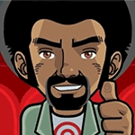

Register for BarCamp 14
Register for BarCamp 14
Schedule
Before the Day
Week of November 30th – December 4th
- Speakers: sign into Discord and find your “room.” Pre-populate this with content relevant to your talk, if you choose.
- Attendees: sign into Discord, accept the terms of the space, and explore the rooms and channels. Introduce yourself or start a conversation!
On the Day
Here's a brief rundown for the day's events (all times are EST):
-
Help desk opens, and organizers and volunteers will be there to help you get oriented. Morning session chats will be open to explore.
-
Opening Remarks
-
Morning Talks
- –
- –
- –
-
Break for lunch, and go offline. Host a “lunch” in Discord by creating a space voice or text channel. Play music. Eat and chat. Maybe do a little lunch time walk or yoga.
-
Afternoon Talks
- –
- –
- –
-
Closing Remarks and Final Thoughts
-
PhillyAV kicks off the After Party with a performance. Other after party rooms open, and may include:
- Reflection & Writing Room
- Lounge Rooms
- Game or Karaoke Rooms
After the Day
Bask in the glow of community we hope virtual BarCamp has stoked. Save any info from public channels. Hunker down and stay safe. Keep in touch via Twitter, or Discord DMs!
NOTE: We will be sunsetting the talk channels in Discord, so if you want to save links, contact information, etc., that were shared in public spaces at BarCamp, please do so before . If you have DMs with any Discord member, those are yours to keep! As long as you both have active Discord accounts your conversation will remain.
If you can't avoid stepping through the ladder and happen to be, say, running from zombies, just say “bread and butter” as you're under it. And watch your luck turn around.
Talks
Talks this year will be happening in Zoom and all associated text chat and other voice and video spaces will be on Discord. This way, all the good stuff shared during a talk (links, photos, ideas) can remain even after the meeting window closes.
As far as the talks themselves, we have received submissions for five talks during each of six session time slots. (Want to sign up to moderate? You can still volunteer!)
Talk topics this year range from working in our new environments (working remote, working with teams) to the practical and insightful (accessibility, building an HTML5 player), to the public good (overcoming bias, fixing democracy with technology), to the personal and creative (tales from a New Zealand expat, digital camera lessons, sewing masks.)
Black cats crossing your path is said to bring bad luck, but did you know black cats protect fishermen at sea, so if you're heading out on the boat, best to bring a cat.
FAQs
-
BarCamp is a community built “unconference” that started in cities nationwide as a response to exclusive invite-only conference FooCamp. Its mission from the start was to be inclusive, accessible and built collaboratively by the people, for the people. The participants have traditionally created the day's schedule of sessions and everyone who attends is welcome to contribute. The unconference has been held in Philadelphia, PA in University of Pennsylvania Wharton School of Business' Huntmsan Hall. In 2020, BarCamp Philly's 13th year, BarCamp went virtual for safety. We hope to be back – in some capacity – in-person in 2021.
-
The topics are as varied as the attendee list and we like it that way! BarCamp started as a tech-centric unconference, but a lot has changed in 13 years.
Professional talks are the most prevalent (from trends to techniques to time management and hiring practices). Many people talk about art or history or cooking or politics or their favorite philosophical paradox. Many talks have “started” at BarCamp and gone on to be pitched and given on huge conference stages around the world. Check out last year's sessions
Sessions can be workshops, presentations, roundtable discussions, games, panels, performances and audience participation. Interactive sessions, panels and multi-person talks tend to be popular. But any format is welcome!
-
Anyone and everyone who has a ticket to BarCamp. You'll find sessions hosted by programmers, designers, content producers, entrepreneurs, project managers, engineers, executives, students, strategists, artists and more.
-
Yes! You are welcome to, but it's not required. If it's your first year, you can dive right in by giving a talk, or take your time attending sessions and soaking it all in. Giving a talk is a great way to start conversations, find like-minded people who share your interests, or test out a talk you'd like to try.
-
In 2020, we will be accepting submissions starting November 9th, and building the schedule ahead of time so people can prepare. (And attendees can know when and for what they want to be online.) Sign up to give a talk. We will be giving online training and test runs for speakers over Zoom the weeks leading up to the event.
-
We plan to host a few rooms of after party activities starting at 5:00pm EST right after we wrap closing remarks. It's BYOB this year, and you can change into your dancing shoes or your lounging sweats (way different from presentation sweats). We'll be keeping some of the Zoom rooms and Discord spaces open for chat, music, games, and more. Choose a room that fits how you feel for more interactive elements, or keep your laptop open to keep the vibes going as you play some video games or make dinner. This is your 2020 BarCamp after party, you choose.
We are excited to be featuring both live and recorded performances from PhillyAV, a collective of artists working across digital media. Check out their work and follow them on Instagram @phillyav.
Note & Content Warning: PhillyAV performances may contain strobe effects and/or other intense lighting and sound.
Tips
-
That means preparing slides ahead of time, bringing visual aids, and materials, if you're going to have your participants doing something!
-
Without an internet connection, you won't be able to stream or access online content. We'll be hosting pre-event testing sessions for all session leaders!
-
For virtual BarCamp, make sure your device is plugged in, camera and microphone are working, and any other devices you'll be using are ready to go!
-
In the Zoom era, this means – submit your talk early, sign up for a test-run early, check in to welcome events and on Discord day-of, and know your Zoom room link. Make sure to sign onto Zoom 5-15 minutes before your session start time to make sure you are ready to go.
-
There won't be catering for virtual BarCamp (we are a little sad, too), but the good news is, you shouldn't have to worry about someone stealing the last bagel!
Organizers
We didn't know if BarCamp Philly 2020 would be a thing. And if it was, would it be one big Zoom room of people interrupting each other or trying to speak on mute?
Thankfully, these folks have been working hard, with the help of a squad of incredible volunteers, to make this year's BarCamp possible.
Thanks to Emily Schilling for this year's illustrations.
-

Maurice Gaston@mofro
-
Brian Crumley @briancrumley
-
Joe Campbell @joercampbell
-
Amanda Renzulli @CaptnPollyanna
-

Briana Morgan @babefromtoyland